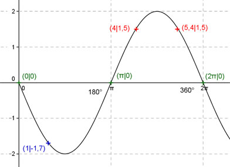

Aufgabe 152 Ergänzen Sie die Wertetabelle für x zwischen 0 und 2π: y = -2 sin x x 1 4 oder 5,4 y -1,7 1,5 Amplitude = 2 ; Periode = 2π Berechnung der Nullstellen: -2 sin x = 0 ---> x = k * π und k = 0, 1, 2 --> x1 = 0 oder x2 = π oder x3 = 2π N1 liegt bei 0 oder 0°, N2 bei π oder 180°, N3 liegt bei 2π oder 360°.  Funktionswert an einer Stelle x ermitteln: x = 1 f(1) = -2 sin 1 = -2 sin 57,3° = -1,7 gerundet. Berechnung der x-Werte für y = f(x) = 1,5: f(x) = 1,5 eingesetzt, existiert zweimal zwischen π und 2 π bzw. 180° und 360° ( siehe Graph). -2 sin x = 1,5 |:(-2) sin x = - 0,75 --> x = arc sin (- 0,75) = -0,85 gerundet, liegt nicht im Bereich zwischen 0 und 2π --> -2 sin x (Spiegelung von 2 sin x an der x-Achse) --> x1 = (π + 0,85) = 4 oder x2 = (2π - 0,85) = 5,4 gerundet und α1 = 228,7° oder α2 = 311,3°.